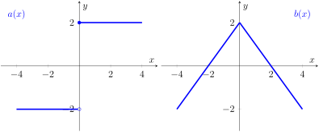

When we consider the consider the composition \(f \circ g\) of the function \(f\) with the function \(g\text{,}\) we mean the composite function \(f(g(x))\text{,}\) where the function \(g\) is applied first and then \(f\) is applied to the output of \(g\text{.}\) We also call \(f\) the outside function whilst \(g\) is the inside function.
Activity2.5.2.
(a)
Consider the function \(f(x) = -x^2+5 \) and \(g(x)=2x-1\text{.}\) Which of the following is a formula for \(f(g(x))\text{?}\)
\(\displaystyle -4x^2 +4x +4 \)
\(\displaystyle 4x^2 -4x +5 \)
\(\displaystyle -2x^2 +9 \)
\(\displaystyle -2x^2 +4 \)
(b)
One of the options above is a formula for \(g(f(x))\text{.}\) Which one?
Activity2.5.3.
(a)
Consider the composite function \(f(g(x))= \sqrt{e^x}\text{.}\) Which function is the outside function \(f(x)\) and which one is the inside function \(g(x)\text{?}\)
\(\displaystyle f(x)=x^2 \, , \, g(x)=e^x \)
\(\displaystyle f(x)=\sqrt{x} \, , \, g(x)=e^x \)
\(\displaystyle f(x)=e^x \, , \, g(x)=\sqrt{x} \)
\(\displaystyle f(x)=e^x \, , \, g(x)=x^2 \)
(b)
Using properties of exponents, we can rewrite the original function as \(\displaystyle e^{\frac{x}{2}}\text{.}\) Using this new expression, what is your new inside function and your new outside function?
(c)
Consider the function \(\displaystyle e^{\sqrt{x}}\text{.}\) In this case, what are the inside and outside functions?
Activity2.5.4.
In this activity we will build the intuition for the chain rule using a real-world scenario and differential notation for derivatives. Consider the following scenario.
My neighborhood is being invaded! The squirrel population grows based on acorn availability, at a rate of 2 squirrels per bushel of acorns. Acorn availability grows at a rate of 100 bushels of acorns per week. How fast is the squirrel population growing per week?
(a)
The scenario gives you information regarding the rate of growth of \(s(a)\text{,}\) the squirrel population as a function of acorn availability (measured in bushels). What is the current value of \(\frac{ds}{da}\text{?}\)
2
100
200
50
(b)
The scenario gives you information regarding the rate of growth of \(a(t)\text{,}\) the acorn availability as a function of time (measured in weeks). What is the current value of \(\frac{da}{dt}\text{?}\)
2
100
200
50
(c)
Given all the information provided, what is your best guess for the value of \(\frac{ds}{dt}\text{,}\) the rate at which the squirrel population is growing per week?
2
100
200
50
(d)
Given your answers above, what is the relationship between \(\frac{ds}{da}, \frac{da}{dt}, \frac{ds}{dt}\text{?}\)
Theorem2.5.5.Chain Rule.
When looking at the composite function \(f(g(x))\text{,}\) we have that
It is important to consider the input of a function when taking the derivative! In fact, \(f'(g(x))\) and \(f'(x)\) are different functions... So computing \(\frac{dv}{dx} \) gives a different result than computing \(\frac{dv}{du} \text{.}\)
Activity2.5.7.
(a)
Consider the function \(f(x) = -x^2+5 \) and \(g(x)=2x-1\text{.}\) Notice that \(f(g(x))= -4x^2 +4x +4 \text{.}\) Which of the following is the derivative function of the composite function \(f(g(x))\text{?}\)
\(\displaystyle -8x +4 \)
\(\displaystyle -4x \)
\(\displaystyle -2x \)
\(\displaystyle 2 \)
(b)
One of the options above is a formula for \(f'(x) \cdot g'(x) \text{.}\) Which one? Notice that this is not the same as the derivative of \(f(g(x))\text{!}\)
Activity2.5.8.
Consider the composite function \(\displaystyle h(x) =\sqrt{e^x} = e^{\frac{x}{2}}\text{.}\) For each of the two expressions, find the derivative using the chain rule. Which of the following expressions are equal to \(h'(x)\text{?}\) Select all!
Below you are given the graphs of two functions: \(a(x)\) and \(b(x)\text{.}\) Use the graphs to compute vaules of composite functions and of their derivatives, when possible (there are points where the derivative of these functions is not defined!). Notice that to compute the derivative at a point, you first want to find the derivative as a function of \(x\) and then plug in the input you want to study.

Figure47.The graphs of \(a(x)\) and \(b(x)\)
(a)
Notice that the derivative of \(a \circ b\) is given by \(a'(b(x)) \cdot b'(x)\text{,}\) so the derivative of \(a \circ b\) at \(x= 4\) is given by the quantity \(a'(b(4)) \cdot b'(4) = a'(-2) \cdot b'(4)\text{,}\) because \(b(4)=-2\text{.}\) Using the graphs to compute slopes, what is the derivative of \(a \circ b\) at \(x= 4\text{?}\)
\(\displaystyle 0 \)
\(\displaystyle -1 \)
\(\displaystyle 1 \)
\(\) -2
\(\) 2
The derivative does not exist at this point.
(b)
Which of the following values is the derivative of \(a \circ b\) at \(x=2 \text{?}\)
\(\displaystyle 0 \)
\(\displaystyle -1 \)
\(\displaystyle 1 \)
\(\) -2
\(\) 2
The derivative does not exist at this point.
(c)
Which of the following values is the derivative of \(b \circ a\) (different order!) at \(x=-2 \text{?}\)
\(\displaystyle 0 \)
\(\displaystyle -1 \)
\(\displaystyle 1 \)
\(\) -2
\(\) 2
The derivative does not exist at this point.
Activity2.5.10.
In this activity you will study the derivative of \(\cos^n(x)\) for different powers \(n\text{.}\)
(a)
Consider the function \(\cos^2(x) = \left( \cos(x) \right)^2\text{.}\) Combining power and chain rule, what do you get if you differentiate \(\cos^2(x)\text{?}\)
\(\displaystyle -\cos^2(x)\sin(x) \)
\(\displaystyle -\cos^2(x)\sin(x) \)
\(\displaystyle 2\cos(x)\sin(x) \)
\(\displaystyle - 2\cos(x)\sin(x) \)
(b)
Consider the function \(\cos^3(x)\text{.}\) Find its derivative.
(c)
Consider the function \(\cos^n(x)\text{,}\) for \(n\) any number. Find the general formula for its derivative.
Activity2.5.11.
In this activity you will study the derivative of \(b^{\cos(x)}\) for different bases \(b\text{.}\)
(a)
Consider the function \(e^{\cos(x)} \text{.}\) Combining exponential and chain rule, what do you get if you differentiate \(e^{\cos(x)}\text{?}\)
\(\displaystyle e^{\cos(x)} \)
\(\displaystyle - e^{\cos(x)} \sin(x)\)
\(\displaystyle e^{-\sin(x)} \)
\(\displaystyle e^{\cos(x)}\sin(x) \)
(b)
Consider the function \(2^{\cos(x)}\text{.}\) Find its derivative.
(c)
Consider the function \(b^{\cos(x)}\text{,}\) for \(b\) any positive number. Find the general formula for its derivative.
Remark2.5.12.
Remember that exponential and power functions obey very different differentiation rules. This behavior continues when we consider composite function. The composite power function \(f(x)^3\) has derivative
Demonstrate and explain how to find the derivative of the following functions. Be sure to explicitly denote which derivative rules (chain, product, quotient, sum/difference, etc.) you are using in your work.
Use this observation, the chain rule, the product rule, and the power rule (plus some fraction algebra) to deduce the quotient rule in a new way!
Activity2.5.15.
Remember my neighborhood squirrel invasion? The squirrel population grows based on acorn availability, at a rate of 2 squirrels per bushel of acorns. Acorn availability grows at a rate of 100 bushels of acorns per week. Considering this information as pertaining to the moment \(t=0\text{,}\) you are given the following possible model for the squirrel:
Check that the model satisfies the data \(\frac{ds}{da}=2\) and \(\frac{da}{dt}\big|_{t=0} = 100 \)
(b)
Find the derivative function \(\frac{ds}{dt}\) and check that \(\frac{ds}{dt}|_{t=0} = 200\text{.}\)
(c)
According to this model, what is the maximum and minimum squirrel population? What is the fastest rate of increase and decrease of the squirrel population? When will these extremal scenarions occur?
Activity2.5.16.
Suppose that a fish population at \(t\) months is approximated by
Find \(P(10)\) and use units to explain what this value tells us about the population.
(b)
Find \(P'(10)\) and use units to explain what this value tells us about the population. (If you want to avoid using a calculator, you can use the approximation \(\ln(4) = 1.4\text{.}\))